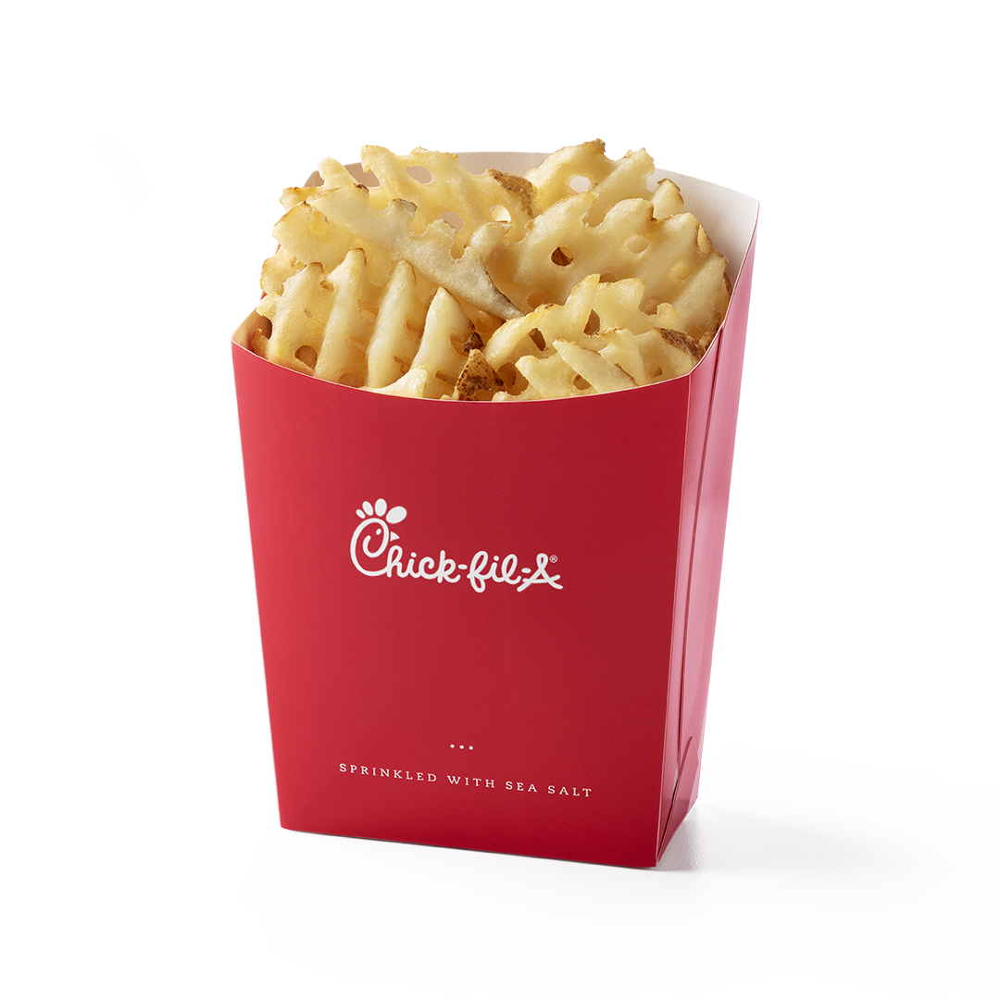

Fries
- 4 large Potatoes (Russet potatoes work great)
- Salt (to taste)
- Pepper (to taste)
- Vegetable oil (for frying)
- Paprika (optional, for some extra flavor)

Instructions
- Prepare the Potatoes: Rinse the potatoes and cut them into long, thin strips about 1/2 inch wide. You can peel them if you prefer, but leaving the skin on gives some extra texture and flavor.
- Soak the Potatoes: Place the cut potatoes into a bowl of cold water and let them soak for about 30 minutes. This step helps to remove excess starch, which makes the fries crisper.
- Heat the Oil: Fill a deep pan with vegetable oil, enough to fully submerge the fries. Heat the oil over medium heat until it reaches around 375°F (190°C). You can test the oil temperature by dropping a single fry into it. The oil should sizzle around it.
- Fry the Potatoes: Drain the potatoes and pat them dry with a clean towel to remove excess water. Carefully add the potatoes to the hot oil in batches, being careful not to overcrowd the pan. Fry them until they're golden brown and crispy, about 5-7 minutes.
- Season the Fries: Use a slotted spoon to remove the fries from the oil. Place them on a paper towel-lined plate to drain excess oil. While they're still hot, sprinkle the fries with salt, pepper, and a bit of paprika if you'd like.